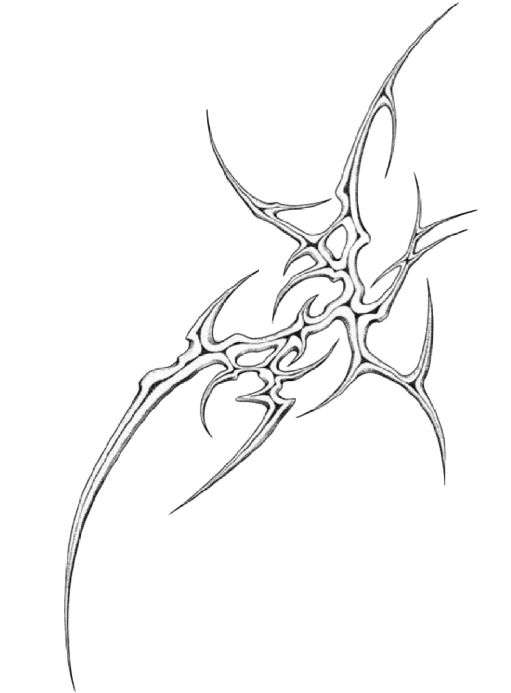
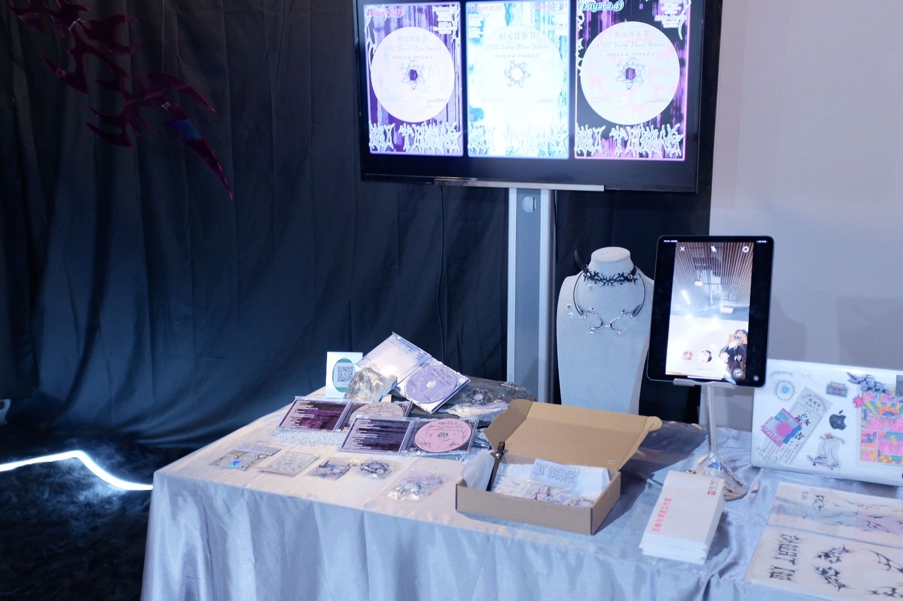
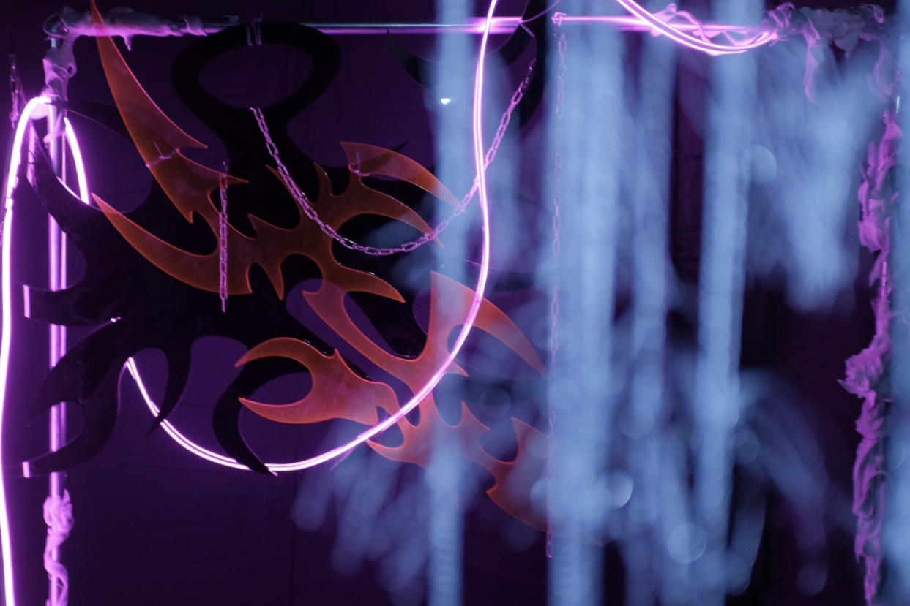
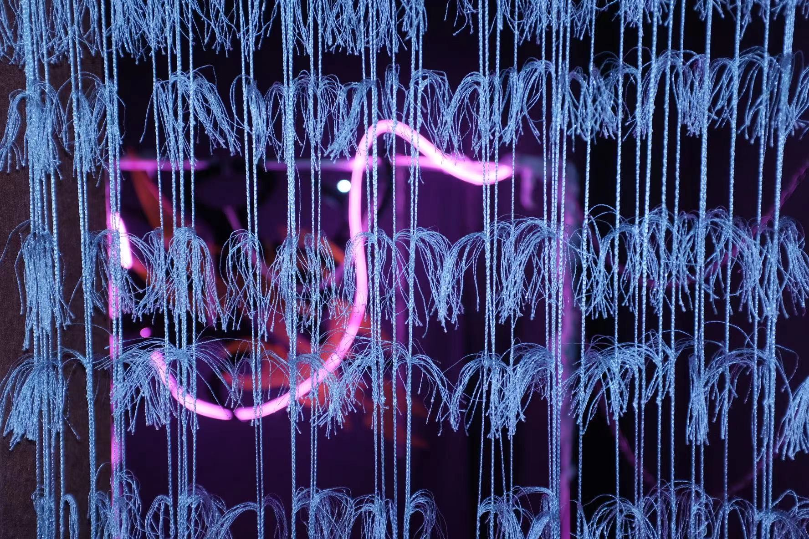

<!DOCTYPE html>
<html >
    <link rel="stylesheet" href="style.css" >
    <div class="ciyuan">
    
</div>
</html>
<body style="background-color: #ccc;"></body>
 
 <!-- BACK -->
 <a href="../index.html">
  <div class="logo">
      
    </div>
    
</a>
   
    
<div id="uncanny2">
   <textarea class="text1" readonly="true" >ORI THORN A music festival exhibition with the theme "Thorns"
    </textarea></a>
</div>

<div id="uncanny3">
   <hr style="width:50%" />
</div>

<div id="uncanny4">
    <textarea class="text4" readonly="true" > April 2 2023
     </textarea></a>
 </div>

 <div id="uncanny5">
        <textarea class="text5" readonly="true" > Art,Video,Exhibition
     </textarea></a>
 </div>

 <div id="uncanny6">
    <hr style="width:50%" />
 </div>


   
 <style type="text/css">
     .video_back {
         /*设置视频最小宽度和高度*/
         /*min-width: 100%;
         min-height:100%;*/
         /**/
         width: 40% !important;
         height: 40%;
         /*生成绝对定位的元素，相对于 static 定位以外的第一个父元素进行定位。可以根据实际情况修改*/
        
         /*这里我试了一下好像只要是矩形的四个角的的点都行,也就是说right:0;bottom:0;也可以*/
         left: 0;
         top: 0;
         /*将视频放在元素的堆叠顺序最底层，以防覆盖其他东西*/
         z-index: 9999;
         /*被替换的内容正好填充元素的内容框。整个对象将完全填充此框。如果对象的宽高比与内容框不相匹配，那么该对象将被拉伸以适应内容框。*/
         object-fit: fill;
         margin-left: 330px;
         margin-right: 500px;
         margin-top: 20px;
     }
     #parent{
         position:absolute;
     }
     .wen {
         font-size: 30px;
         color: #fff;
     }
 </style>
</head>
<body>
 <div class="parent" style="width:1920px;height:1080px;">
     <!--
 autoplay	autoplay如果出现该属性，则视频在就绪后马上播放。
 controls	controls如果出现该属性，则向用户显示控件，比如播放按钮。
 loop	loop如果出现该属性，则当媒介文件完成播放后再次开始播放。
 muted	muted规定视频的音频输出应该被静音。
 poster	URL	规定视频下载时显示的图像，或者在用户点击播放按钮前显示的图像。
 preload	preload
 如果出现该属性，则视频在页面加载时进行加载，并预备播放。
 如果使用 "autoplay"，则忽略该属性。
 src	 url要播放的视频的 URL。
 width	pixels设置视频播放器的宽度。
 height	pixels设置视频播放器的高度。-->
     <video class="video_back" src="ciyuan.MP4" muted autoplay="autoplay" loop="loop">
         您的浏览器不支持
         
     </video>
     <div id="uncanny10">
      <textarea class="text2" readonly="true" >GRAPHIC
       </textarea></a>
    </div>

     <div class="myban2">
      
      
      
      </div>
      
     
 </div>
</body>
</div>
<div id="square">
  <div class="squareone">
    <div id="square2">
      <p style="color: #2e2d2c;"> &nbsp INFORMATION</p>
    </div>
    <p>Effy </p>
      <p>Designer  Creator</p>
        <p>From  Shanghai </p>
          <p>Student of Shanghai Institute of Visual Arts department of visual communication.</p>
            <p>effyyly163.com</p>
              <p>IG：effy._26</p>
                
                
  </div>
  <div class="squareone">
    <div id="square2">
      <p style="color: #2e2d2c;">
        &nbsp PROJECT</p>
    </div>
    <p>BOOK DESIGN</p>
    <p>SPACE DESIGN</p>
    <p>GRAPHIC DESIGN</p>
    <p>……</p>
  
    
  </div>
  <div class="squareone" style="width: 660px;margin-left: 30px;">
    <div id="square2" style="width: 660px;">
      <p style="color: #2e2d2c;"> &nbsp INTRODUCE</p>
    </div>
    <p>Effy is a girl from Shanghai. She likes traveling, music and wandering around the streets of Shanghai for her daily life. My hobby is to search for vintage, beautiful and unique clothes and trees. As for design, I think directly seeing the design work itself can better understand me. If you are interested in me, please contact me.</p>

  </div>
</div>
</body>
</html>


